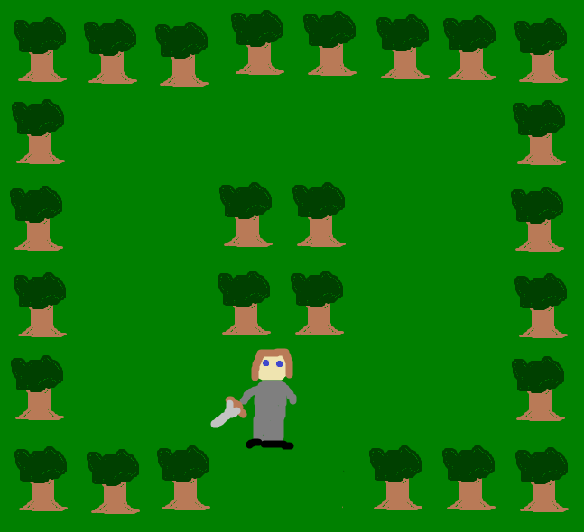
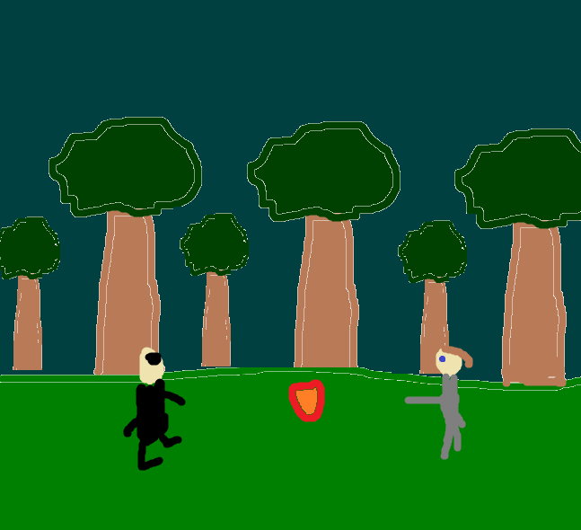

For the third time in a row, I started a project expecting it to be relatively straightforward and proceeded to get slapped in the face with numerous unforeseen complications. I should really get that checked out. Regardless, this time I think I gave myself something more reasonable. My goal was remaking an old calculator game that I made in 8th grade. It was a basic turn-based RPG with magic, enemies, and a big bad at the end. It ran awfully, but I still hold that game near to me (even though the original code was lost a while back), so I figured I'd see my 13-year-old self's vision complete now that I know how to program. What I didn't fully understand is that the TI-84 is quite a different programming environment than pixiJS, and that just because I made it in two weeks back then doesn't mean I can do the same now, but that's neither here nor there.
This project was something I had planned since the start of 235, and I'm far too stubborn to change months-old plans, even if they go awry almost immediately. In my case, a backup I made of the project was incomplete and didn't have the battle system or even an end state. Remaking the battle system would be giving myself far too much work to worry about on top of the two other projects, the final exam, and final essay I had in other classes, so I compromised by making a battle system akin to that of Kaeru no Tame ni Kane wa Naru, which is fundamentally an auto-battle system with the ability to pull up a menu to take actions like using skills or items. It's not quite what I wanted out of the project, but it was a fine compromise.
It took a while to get used to how pixiJS worked, and that ate up most of my time at first. Such concepts I forgot included:
Once I got over those roadbumps, however, it was pretty smooth sailing, which was a genuine relief after the past few projects gave me several headaches and made me want to have a talk with the inventor of JavaScript. Of course, there were still bugs that I had to deal with, but most of them were really straightforward and didn't take too much time to fix.
Yeah nothing eventful happened after the growing pains of pixiJS. I made the bold decision of reading the requirements before and during development, so I didn't have to make any last-minute additions just to fill a quota. Images are sized well, instructions are shown on first playthrough and can be brought up again whenever the player desires, and everything looks and runs with no issues. For once, I got off relatively well in terms of workload, which I needed for this project more than any other.
Almost all sprites were taken from the 8bit Overworld Tileset by itchabop. You may notice that it has a price tag, but don't worry! I got this with a bunch of other stuff in a bundle supporting Ukraine a few months back, so this was something I've had for a while.
The dust cloud sprite and heart sprite were exceptions, taken from Kaeru no Tame ni Kane wa Naru, and the cursor was made by me.
Sound effects and music were taken from Fire Emblem: The Blazing Blade on the Game Boy Advance. I really like that that the game's sound design fit pretty well with well with my project. The music specifically is titled Inescapable Fate. Go check the game out if you haven't, it's a pretty fun tactical RPG.
Font used for the text was Nerko One
Back in the day (8th grade), I made a really basic game for the TI-84 as what I consider my first game - a basic RPG with one dungeon, one enemy, and one boss. It was really bad and the original code has since been lost due to the calculator belonging to my school, but a version of it lives on as a web version made for a seperate web development class in high school. You can check that out here. That one didn't even have the battle system. My Project 3 will be re-recreating the game, but making it a true playable experience for the first time in its 6-year-long lifespan.
Turn-based RPG
Desktop only, may make a mobile-friendly version if I have the time
Your name is [insert name here]. You have entered the Forest of [adjective] to track down [boss name] III. He and his minions have been terrorizing the village where you live, and the forest is where you suspect his base is. Armed with a blade and some magic power, you must defeat the mafia boss once and for all.
Graphical style: pixel-art
Sounds: 8-bit
There are two states: overworld and battle. In the overworld, you can move around and explore the forest. There are enemies in the overworld that, if you run into one, will trigger a battle. In battle, you attack the enemy and they can attack you back automatically. Enemies have attacks of varying You also have a limited pool of magic to cast spells that are either stronger attacks or self-heals. There is also a boss at the end of the forest who is a tougher foe, and defeating him ends the game and displays your final score, which scales off both final HP and total enemies defeated.
Overworld: WASD to move, Space to select objects Battle: Space to open menu > WASD to change highlighted command > Space again to select it
On the first load of the game, there will be a pop-up window explaining the overworld controls. Another window will appear on the first screen with an enemy explaining that, and lastly, a third pop-up will appear in the player's first battle.
The player will need to learn the most basic of turn-based RPG strategies (saving MP for important encounters and only healing when necessary) to beat the game. For ambitous players seeking a high score, they need to seek the perfect balance of defeating many enemies to boost the score count, but not too many enemies to wear themselves down for the final boss as there are no level-ups to increase your HP or MP count.
Made with MS Paint on a trackpad, actual art will be much better


You may be thinking to yourself: "wow he's doing something he's already done for the final project? That's kinda weird". However, there will be a substantial amount of reworking to almost everything. The only things staying from the original version are the concept, the gameplay loop, and the map. Code is being reworked to accomodate for graphics via PixiJS, and all of the JavaScript in the original web version is just DOM modification, so it fulfills the requirements of me learning an unfamiliar scripting tool and getting fully hands-on with the code. If you do want me to add some things though, then do let me know sooner rather than later.
Leo Schindler-Gerendasi (me) is a second year Game Design and Development major. My primary interest is coding, with smaller interests in art and music as well. I have skills in Unity, MonoGame, and HTML/CSS/JavaScript. I generally use Aseprite for my art.